- Supports multiple types of players. Different themes available for different tasks (yellow and pink). Bow counter and live lyrics during mantras provided.
- The proximity sensor counts each time it detects a head. To prevent duplication and maintain their pace, the user can refer to when the lotus indicator in the upper right corner is fully loaded.
- If a device doesn't support the proximity sensor, go to settings and set the bow timer.
- The music player calculates the position of the title and play button and applies the position to the minimized and maximized player size.
- Dismissible music player.
- lock progress bar, loop mode, set speed.
Paramita Widget Description
Music Player

 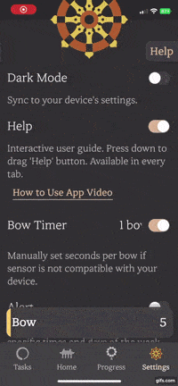
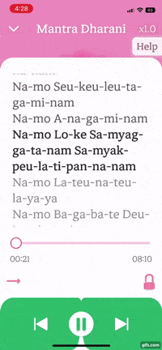
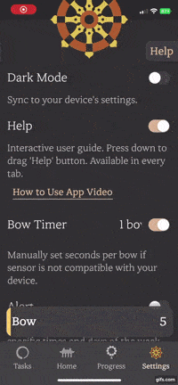
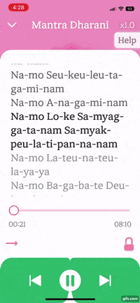
Background Mode
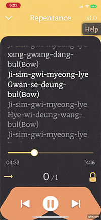
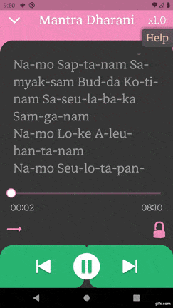
- Background action interacts with the local db to track progress.
- Play, pause, go to the next or previous song, seek duration in the background.
- Reflects the number of iterations of the task.
Live Lyrics
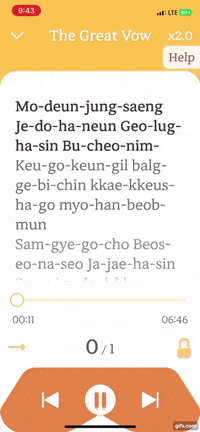
- Improved performance to updating current duration once second is changed using rxdart.
- Scroll to a current lyric. Flutter doesn't support scrollToItem currently.
- Previous, current, and next lyrical phrases have different text effect styles.
Progress Bar
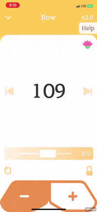
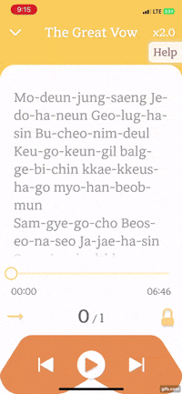
- Implemented with custom painter and gestures.
- Supports two different types of progress bars.
- Calculates the position of the indicator according to the center of the user's gesture.
- Seek duration box follows progress bar's indicator not to overflow at screen's edges.
- Grows, shrinks, and aligns according to the size of the music player.
Floating Help Indicator
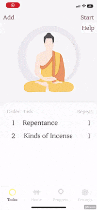
- Help is supported on all interactive screens.
- Help Indicator position can be changed.
- Once help is activated, it expands across the whole screen while bottom navigation bar and active music player is hidden.
- Arrow drawn with custom painter with animation.
Bar Chart
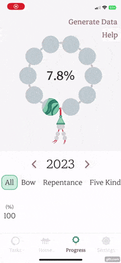
- Daily progress is saved until midnight. Progress resets each day.
- Completion percentage rate provided daily and organized by year.
- Bar graph adjusts according to the tab indicator.
- The indicator follows where the user taps.
Text Reader
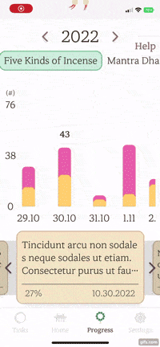
- User's record feelings and thoughts in the reflection journal.
- Date, percentage of completion, and reflection of that day displayed.
- The left wall indicator appears and disappears depending on the scroll position.
- When the user taps a month on the left side, the reader moves to the corresponding month.
Dropdown
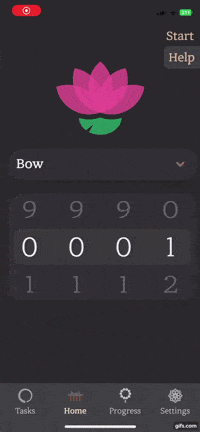
- Implemented it using self-made plugin, cool_dropdown.
- Included function to give a scroll effect when the words overflow.
Tab Indicator
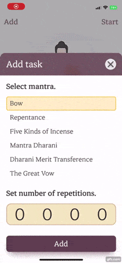
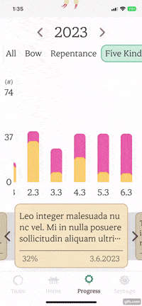
- Displayed horizontally and vertically.
- Automatically resizes and aligns to the child Widget.
Bottom Sheet
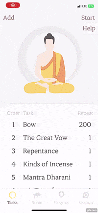
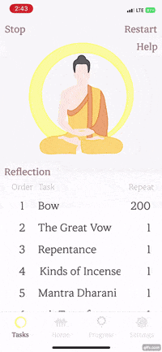
- The height of the bottom sheet adapts to the height of the content.
- If the height of the content is greater than the height of the bottom sheet, scrolling is applied automatically
Local Notification
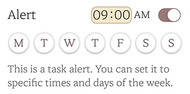
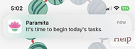
- The user sets a time to start tasks and receives notifications.
Custom Paint Animation
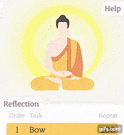
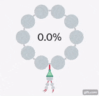
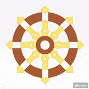

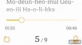
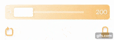
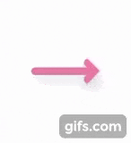
- Designed all icons, animations, and custom painter.
- Design is intentional and reflective of Buddhism itself— simple, clean, and minimalistic.
Glassmorphism
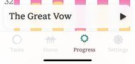
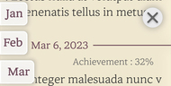
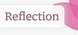
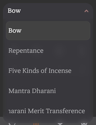
- Glassmorphism was applied to all floating widgets to provide consistency for users.
※ When the browser finishes loading, enable to scroll to item.